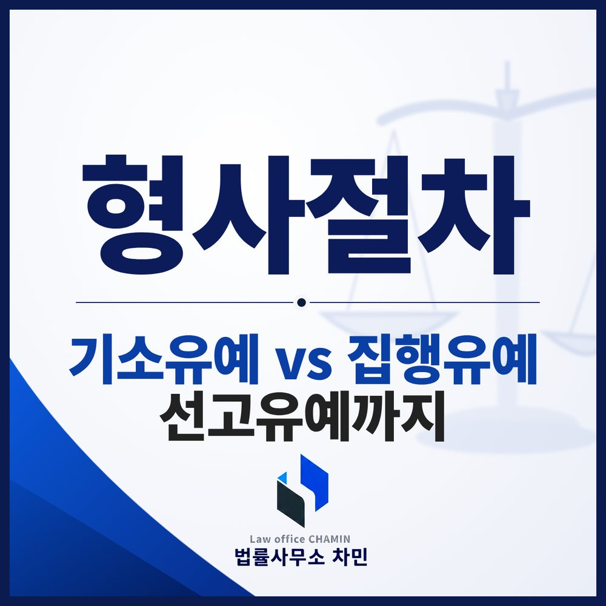

핵심 답변
기소유예는 검사, 집행·선고유예는 판사. 전과로 남는지, 집행유예 기간 중 재범의 결과, 단계별 준비 자료까지.
군산에서 형사사건으로 처분이나 재판을 앞두고 “기소유예라도 받을 수 있을까”, “집행유예면 전과가 남느냐”를 고민하고 계신다면, 세 가지 유예가 어느 단계에서 누가 정하는 것인지부터 구분해야 합니다.

세 가지 ‘유예’는 정해지는 단계가 다릅니다
형사사건은 경찰 수사 → 검사의 기소 여부 결정 → 법원 재판 순으로 진행됩니다. 기소유예는 검사가, 선고유예와 집행유예는 판사가 정합니다. 이름은 비슷하지만 어느 단계에서 끝나느냐에 따라 효과가 크게 다릅니다.
| 구분 | 누가, 언제 | 의미 | 범죄경력 |
|---|---|---|---|
| 기소유예 | 검사, 수사 단계 | 혐의는 인정되지만 재판에 넘기지 않음 | 범죄경력으로 남지 않음 (수사경력은 남음) |
| 선고유예 | 판사, 판결 선고 시 | 형의 선고 자체를 미룸, 2년이 지나면 면소된 것으로 봄 | 형의 선고가 없으므로 범죄경력이 되지 않음 |
| 집행유예 | 판사, 판결 선고 시 | 형을 선고하되 집행만 미룸 | 형의 선고가 있으므로 범죄경력으로 남음 |
기소유예 — 이번에는 재판에 넘기지 않겠다
기소유예는 범죄 혐의가 인정되더라도 검사가 범인의 나이, 성행, 동기, 범행 후의 정황 등을 참작해 기소하지 않는 처분입니다(형사소송법 제247조). 처음 저지른 범행인지, 피해가 회복되었는지, 깊이 반성하는지가 주로 고려됩니다.
- 무혐의와 다릅니다 — 무혐의는 혐의가 인정되지 않는 것이고, 기소유예는 혐의는 인정되지만 처벌을 미루는 것입니다. 억울한 사건이라면 기소유예가 아니라 무혐의를 다퉈야 합니다.
- 수사경력은 남습니다 — 재판을 받지 않으므로 범죄경력자료에는 남지 않지만, 수사를 받았다는 수사경력자료는 일정 기간 남습니다.
- 다시 문제 될 수 있습니다 — 기소유예는 판결이 아니어서, 같은 행위가 반복되면 이전 사건을 다시 수사해 함께 처리할 수 있습니다. 비슷한 일이 되풀이되면 상습범으로 무겁게 처벌될 수도 있습니다.
집행유예 — 형은 선고하되 교도소에는 가지 않는다
집행유예는 유죄를 인정하고 형을 선고하면서, 그 집행을 1년 이상 5년 이하의 기간 동안 미루는 것입니다. 3년 이하의 징역이나 금고, 또는 500만 원 이하의 벌금을 선고할 때 정상에 참작할 만한 사유가 있어야 할 수 있습니다(형법 제62조 제1항).
- 할 수 없는 경우 — 금고 이상의 형을 선고한 판결이 확정된 때부터 그 집행이 끝나거나 면제된 뒤 3년까지의 기간에 저지른 죄에는 집행유예를 할 수 없습니다(같은 항 단서).
- 함께 붙는 처분 — 보호관찰, 사회봉사, 수강명령이 함께 내려질 수 있습니다.
- 무사히 지나가면 — 유예기간을 실효나 취소 없이 지나면 형의 선고는 효력을 잃습니다(형법 제65조). 다만 형을 선고받은 사실 자체는 범죄경력자료에 남습니다.
선고유예 — 형의 선고 자체를 미룬다
선고유예는 1년 이하의 징역이나 금고, 자격정지 또는 벌금을 선고할 경우 뉘우치는 정상이 뚜렷할 때 형의 선고를 미루는 것입니다(형법 제59조). 자격정지 이상의 형을 받은 전과가 있으면 받을 수 없습니다. 선고유예를 받은 날부터 2년이 지나면 면소된 것으로 봅니다(형법 제60조). 형의 선고가 없으므로, 벌금형만 받아도 신분상 불이익이 생기는 공무원·교원 등에게 특히 의미가 큽니다.
집행유예 기간 중 다시 사건이 생기면
집행유예 기간은 ‘조심해야 하는 기간’입니다.
- 실효 — 유예기간 중 고의로 범한 죄로 금고 이상의 실형이 확정되면 집행유예가 효력을 잃습니다(형법 제63조). 그러면 앞에서 유예되었던 형까지 함께 복역하게 됩니다.
- 취소 — 보호관찰이나 사회봉사·수강명령의 준수사항을 위반하고 그 정도가 무거우면 집행유예가 취소될 수 있습니다(형법 제64조 제2항).
- 다시 집행유예를 받을 수 있을까 — 앞의 판결이 확정된 뒤 유예기간 중에 저지른 죄라면 원칙적으로 다시 집행유예를 받기 어렵습니다. 판례는 유예기간이 이미 지난 뒤에 형을 선고하는 경우에는 다시 집행유예가 가능하다고 보고, 앞의 판결이 확정되기 전에 저지른 죄라면 사정을 참작해 집행유예가 선고되기도 합니다. 구체적인 날짜 관계에 따라 결론이 달라지므로 범행일과 확정일을 정확히 확인해야 합니다.
어느 단계에서 무엇을 준비할까
같은 사실관계라도 어떤 자료를 언제 내느냐에 따라 결과가 달라질 수 있습니다.
- 수사 단계 — 혐의를 다툴지, 인정하고 기소유예를 구할지를 먼저 정합니다. 기소유예를 구한다면 합의서·처벌불원서, 반성문, 재범 방지 노력(교육·치료 이수), 가족·직장의 탄원서를 처분 전에 의견서와 함께 냅니다.
- 재판 단계 — 실형과 집행유예를 가르는 것은 결국 양형 사정입니다(형법 제51조). 피해 회복, 범행 경위, 전과, 생활 환경을 구체적인 자료로 보여 주고, 선고유예가 가능한 사안이라면 그 요건에 맞춘 사정을 함께 주장합니다.
군산에서 사건이 진행 중이라면
군산에서 일어난 사건은 대개 군산경찰서가 수사하고, 기소되면 전주지방법원 군산지원에서 재판이 열립니다. 기소유예를 구할지, 재판에서 집행유예나 선고유예를 다툴지는 사건이 지금 어느 단계에 있는지에 따라 달라지므로, 단계가 바뀌기 전에 필요한 자료를 미리 준비하는 것이 좋습니다.